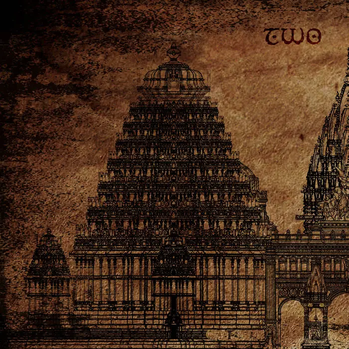

Gli Sleep Token sono una band inglese che combina elementi di metal, R&B e pop. La loro musica è caratterizzata da atmosfere oscure e testi emotivi.
La band si contraddistingue per l'uso di maschere e costumi durante le esibizioni, creando un'esperienza unica per i fan. Formata da musicisti anonimi, la loro identità rimane un mistero, aggiungendo un ulteriore livello di fascino al loro progetto musicale.
Formazione
-
Vessel - voce principale, tastiere
-
II - batteria
-
III - basso
-
 IV - chitarra
IV - chitarra
-
Espera - cori
Discografia
-
One (EP) - 2016
- Thread the Needle
- Fields of Elation
- When the Bough Breaks
-

Two (EP) - 2017
- Calcutta
- Nazareth
- Jericho
-
Sundowning (album) - 2019
- The Night Does Not Belong to God
- The Offering
- Levitate
- Dark Signs
- Higher
- Take Aim
- Give
- Gods
- Sugar
- Say That You Will
- Drag Me Under
- Blood Sport
-
This Place Will Become Your Tomb (album) - 2021
- Atlantic
- Hypnosis
- Mine
- Like That
- The Love You Want
- Fall For Me
- Alkaline
- Distraction
- Descending
- Telomeres
- High Water
- Missing Limbs
-
Take Me Back to Eden (album) - 2023
- Chokehold
- The Summoning
- Granite
- Aqua Regia
- Vore
- Acensionism
- Are You Really Okay?
- The Apparition
- DYWTYLM
- Rain
- Take Me Back to Eden
- Euclid
-
Even in Arcadia (album) - 2025
- Look to Windward
- Emergence
- Past Self
- Dangerous
- Caramel
- Even in Arcadia
- Provider
- Damocles
- Gethsemane
- Infinite Baths